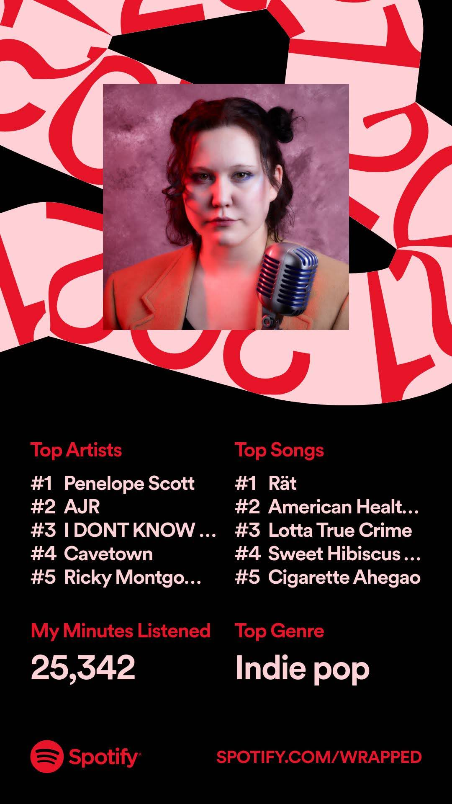
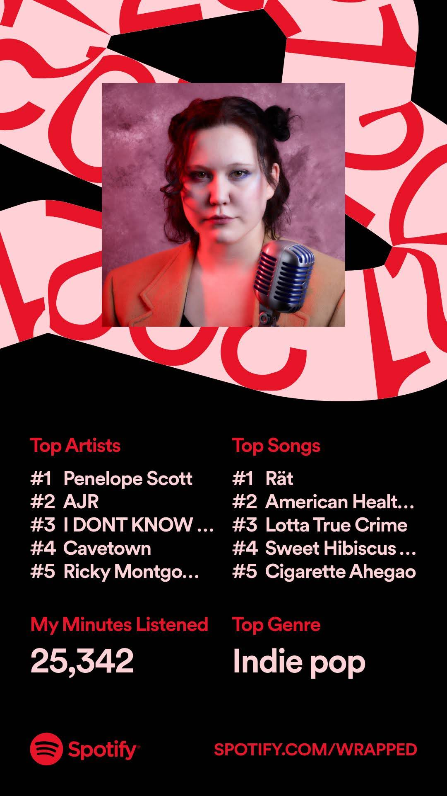

Persona - half•alive
★★★★☆
Favourite Songs:
- Sophie's House
- Automatic
- Long Drive
powered by @biancarosa/lastfm-last-played


LOVE THIS ALBUM!
Honestly my first proper go at listening to her work, having heard other one-off songs like "Antonymph" and "Lesbian Ponys With Weapons"
ALSO the lyrics/notes booklet she released alongside the album is so cool!

Saw Dallon perform this album live! Will Joseph Cook made an appearance, making that the second time I've seen him, both times at IDKHOW concerts lol

This was my top album this year, with Spirit being my favourite! If you look at the "by the numbers" section, you can see Penelope's been one of my favs for a while.

My first proper introducion to non-miku vocaloid/voicesynth/whatever songs, with Machine Love obviously being my favourite. More recently, songs like ROT FOR CLOUT, I Wish That I Could Fall, and Cadmium Colors have grown on me a lot!!
I also nabbed the deluxe edition of this one on CD (big fan of BIRDBRAIN and Dance Delightful!!)

A much more upbeat album compared to his previous two, and I love it!


 
